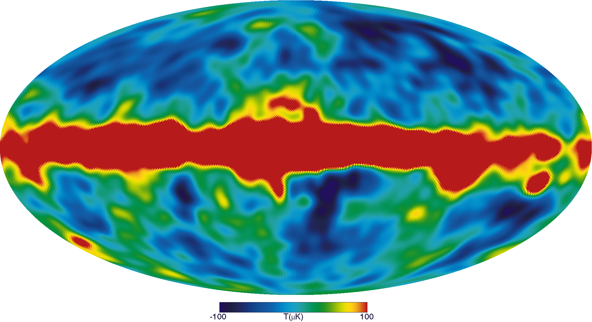
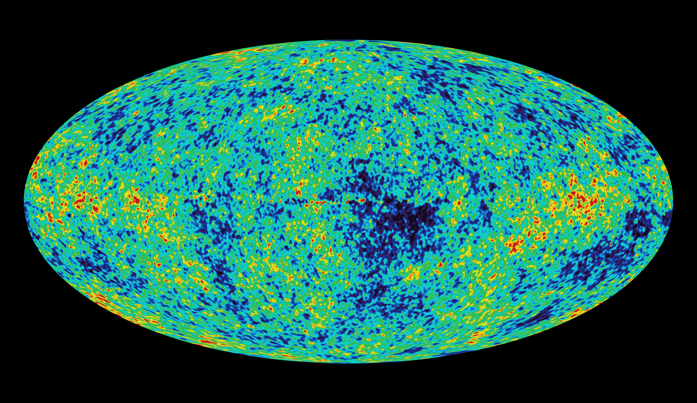

This is what I'm listening to lately:
Maribous State is a duo from Hertfordshire, England.
They compose electronic music.
You can find Maribou State on
Bandcamp,
Apple Music,
Spotify,
YouTube.
Hallucinating Love was published on Jan 31, 2025
This is what I read today:
Soundscapes of the Silenced
by Erin Maglaque
on The New York Review of Books.
I'm still a bit behind on the NYRB, as well as on the New Yorker and the London Review.
But I'll manage to read through all of them, eventually.
Today I was in a conversation about sulfur and its connection with the devilish figures of literature.
Then I thought about the smell of sulfur and how it is used in the Bible to describe the smell of hell.
Then I thought about the idea of hell in literature.
And I figured the beautiful art of Gustave Doré.
And I remembered the illustrations he made for Dante's Divine Comedy.
This is one of many:
Inferno, Canto X.

Inferno, Canto X. Gustave Doré
Today Bon Iver announced a new album.
Which is great news.
The new album, called
'SABLE, fABLE'
will be released on April 11, 2025.

the new album cover. all rights reserved.
Today, a brief reminder that not every change must be visible.
Some things take time, and change is barely perceivable.
Today I started a new path, let's see where it'll lead.
But after all, you have to have gratitude.
So let's listen to some gratitude.
This is not just a song. It was first a
poem.
Today I'm sharing a poem by Matsuo Basho.
It's a haiku.
いざ行かむ
雪見
に
ころぶ
所
まで
which sounds like:
iza yukan
yukimi ni korobu
tokoro made
and it means, translated in English by Andrew Fitzsimons:
Let's get up and go
view the snow till we come to
wherever we fall
I stumbled on this haiku while reading
Linus,
a magazine about books and graphic novels,
in a piece named "Paese delle Nevi",
by Giovanni Piliarvu.
Today I went to see We Live in Time, the new movie by John Crowley starring Florence Pugh and Andrew Garfield.
I found it beautiful, along with the soundtrack, composed by Bryce Dessner.
I made this website to share my thoughts, but also as a way to show what I'm learning to do in terms of web development and coding.
It's not necessarily something that must be shared, but it's a way to practice and learn.
After today, I will not update this website daily, but I will work on it and update it regularly.
I will refine some things I did in a hurry, and I will add some new features to my pre-existing projects.
See you soon!
I'm back!
I've been a bit busy at work and then I didn't want to come writing here, but here we are once again.
I've started studying Machine Learning, but after two weeks I realized I had to properly learn the way it should be: back from the start.
So I'm studying Statistics and then I'll come back to ML.
In the meanwhile, here's a beautiful song I hope you'll cherish the way I do.
Beginnings are hard. Especially for the Universe.
Welcome to the new, first, only place where you can look up to the immensity of the cosmic structures.
1. Why Last, why Scattering and why Surface?
The idea behind the name “Last Scattering Surface” came to me while I was studying for my Cosmology exam during my ongoing Master’s Studies in Astrophysics.
The idea behind the project is to talk about whatever fascinates me about the Universe. It’s going to be a long journey.
2. Do you feel like you should join this project?
Do you feel anything at all when you gaze upon the stars (abused expression, pardon me)?
If this is the case for you, here you can find something to enjoy yourself while gazing.
Whenever you decide to stop staring at the sky and decide to use the Internet, he said.
But what is exactly the "Last Scattering Surface"?
und einsam
Unter dem Himmel, wie immer, bin ich.
Friedrich Hölderlin - Abendphantasie
If you know, don't keep it to yourself! Go out and shout it to your friends and family.
If you don't know, wait until you have read this post. Then read again this subtitle.
To understand why this project is called this way,
we need to clarify what means in Cosmology to have a surface of last scattering.
To get this, we need to understand what happens in the Universe - actually,
what happened in the first millennia of its life. 1
In this scenario, the Universe is characterizable as a relativistic2 fluid.
In addition, every component interacts with every other, and the fluid is in
thermal equilibrium (there is not any heat flow).

The anisotropies of the Cosmic microwave background (CMB) as observed by the COBE mission. Image credit: NASA
As time passes, the Universe expands and cools down, rendering it possible for
electrons to bond with protons to form the simplest atom (spoiler - Hydrogen atom).
This era of the history of the Universe is often called the “recombination era”,
even though there was not a previous time when these components “combined”.
So “recombination era” is just a funny name.
The components of the Universe at the time of our investigation are
primarily photons, protons, electrons, and hydrogen atoms.
Unlike the early days, a colder Universe is not fully ionized.
There are single charges freely flowing in space, and that’s why the
rate of scattering3 falls.
When the rate of ionization has fallen, the photons have nothing to
interact with and don’t scatter with the matter, starting to “free stream”
into the Universe as it expands.

The anisotropies of the Cosmic microwave background (CMB) as observed by the WMAP mission. Image credit: NASA
When the rate of ionization has fallen, the photons have nothing to
interact with and don’t scatter with the matter, starting to “free stream”4
into the Universe as it expands.
The Temperature of this “Cosmic Background Radiation” (CBR) is
measured to be:
T = 2.72548 K
where K stands for Kelvin (the only correct way to measure temperatures -
sorry Celsius, not sorry Fahrenheit).
We said that the CMB cools down with the expansion.
This means that when recombination started and finished the era
of matter-radiation interaction, the CMB had a different temperature.
One can calculate the time t this happened, the temperature T
at which this happened, and the relative redshift5.
Now, let’s be said that is not like CMB photons won’t ever interact with anything anymore.
It’s just that this won’t happen as frequently as when the radiation was coupled with matter.
So this sea of photons will continue to travel through the Universe as
it expands, cooling and expanding.
To visualize this surface, we could first try to look at the best image
we have of the background radiation (parametrized by its temperature) as
it is today. Here it is:

The anisotropies of the Cosmic microwave background (CMB) as observed by the Planck space telescope. Image credit: ESA and the Planck Collaboration
We said that the temperature is almost 3 K: then why are there differences in this image,
and it’s not just one color?
That’s because there are indeed some little anisotropies,
due to various phenomena, but primarily because different parts of the Universe evolved in slightly different ways.
The different colors show that there are cooler and hotter parts of the Universe.
So what is the last scattering surface? It’s this huge wall of photons that continuously travel
towards the outer parts of the Universe (why, are there also inner parts of the Universe? Is there a center? )
like an opaque window that renders it impossible to look beyond.
That's it for today.
We hope to have motivated you to look upon this subject.
If you want to look closely and deeply into the rabbit hole,
here are some books/articles/links to enjoy.
Hope to hear from you soon!
And here is some music to help you surf this Last Scattering Surface:
space sound:
Hallucinating Love by Maribou State
a duo from southern England that makes heartwarming electronic music
I don’t exactly like electronic music.
That is probably not true, but I like it blended with some other genre.
I don’t really know where I’m going with this, so I’ll go straight to the point.
I stumbled upon
Maribou State through their first studio album,
Portraits (2015).
I saved one song in my Spotify favourite songs, then lost track of this duo.
I caught myself listening in loop their second LP,
Kingdoms in Colour (2018), this fall, but I did not connect the dots that those two LPs came from the same group.
Last January,
Chris Davids and
Liam Ivorym, the two English musicists behind Maribou State released
Hallucinating Love (2025), and it got in my feed (by then I had switched to Apple Music).
Maribou State - Hallucinating Love (2025)
Hallucinating Love seems festive since its beginning (
Blackoak). It promises to go somewhere, and it delivers in the second part of the song.
Otherside is exactly how I imagine clubs in the 1930s in a retrofuturistic utopia, and shares with
Peace Talk the presence of
Holly Walker, longtime collaborator of Maribou State.
II Remember feels exactly like something you try to remember when someone clicks their fingers in front of you after you zoned out while they were talking; it blends into the next song (
All I Need) that carries you once again in a safe space.
Dance on the World starts almost Daft Punk-ish, then becomes the most danceable track on the record.
Bloom is another track where the rhythm and the cadence take you without hitting anything in particular to the next one.
Peace Talk starts almost announcing some blending of Middle Eastern music with electronics, and it seems to exist only to be embellished by the voice of Holly Walker.
Passing Clouds is an instrumental, and its position in the tracklist escorts you out of the club from which they will play the next song,
Eko’s, that maybe should be listened to from a different room.
Rolling Stone closes the LP, and it’s a hymn you should not be afraid to sing, together with those you listen to music with.
If you liked this, you could share this project with others.
See you next time!
space sound: Middle Farm Session by Daughter
the new work by the trio fronted by Elena Tonra is a gentle wound
Sad music is so good to listen to.
I think many can relate, and it is particularly true when it is produced by someone that you can imagine are listening to their own sad music.
Daughter falls in this category: the trio formed by
Elena Tonra,
Igor Haefeli, and
Remi Aguilella is always on the verge of
cracking you up and making you cry, and does so by warmingly encouraging you to accept that not everything must be happy to be beautiful.
They formed in
2010 and recently released an EP registered at the Middle Farm Studios in Dartmoor,
Middle Farm Session (
2025).
I stumbled upon
Maribou State through their first studio album,
Portraits (2015).
Daughter - Middle Farm Session (2025)
It starts as a conversation with
Future Lover, where we get caught
listening for sweet nohings from ghost in the room
and Tonra presses us to answer her questions, “
what’s the future like?”,
to which someone replies “
wait another year”, and we’re just happy to be interrogated by her voice.
Party is not a song you could party with, but could be the perfect score for an end-of-relationship-kind-of-conversation,
making that night “
the worst night of [your]
life”.
To Rage is the perfect sequel to Party, where we’re left tracking the pieces left by those exhausting conversations
that explode, when someone storms out of the room and you end up “
distraught”.
Be on your way is the perfect therapy session you need after that, when you make sense of what happened,
of the planets that mark the distance between you two; and as long as you try to “
be on your way”,
you’ll find it difficult to “
reconstruct the scene”.
Dandelion exits from that loop, and the music of Haefeli and Aguilella follows that more than ever,
lifting a bit up the rhythm: and it’s not “
a shame” like Tonra sings,
because it’s a brief parenthesis that closes on
Isolation, where we feel the coming to an end of the EP,
“
full-knowing we’re incomplete”; and indeed the last song is
Neptune,
where we come back almost full circle to the Tonra of
If You Leave (
2013), but Tonra here seems to be a bit more liberated to experiment with her voice.
If you need to put some faith in a record, you should start with this one: in the end, there’s no-one out there to whisper answers.
If you liked this, you could share this project with others.
See you next time!
<-- SoS POST NUMBER #3 -->
single space: 17 by Youth Lagoon
the day that you do is the day that you die
"it is a space I no longer inhabit, nor want to inhabit. Youth Lagoon is complete. I’ve reached the top of a mountain, only to then be able to see a much larger one I want to ascend."
17 came from a complete project: it’s the fourth track on the first album produced by Trevor Powers under the moniker Youth Lagoon, The Year of Hibernation (2011). The LP was followed by Wondrous Bughouse (2013) and Savage Hills Ballroom (2015).
Powers sings that the day you stop imagining is the day you die (or at least this is what his mother told him): should this be connected to the publication of two new LPs since 2023, eight years after the statement that ended Youth Lagoon?
It’s not why we’re here though - let’s not speak of the future.
But where’s here, and when is it? The year is 2013 and the place is
Boise, Idaho (coming - running away? - from San Diego, California).
Power finds himself with a
brain that can
think faster than [he]
can but not fast enough,
and with thoughts that he’s sure would
lock [him]
up if spoken out loud.
He flees to his younger memories, where life was as fun as can be, going out hunting for snakes (too dangerous? - maybe that’s part of the fun), going out camping and swimming in lakes.
Produced alongside
Jeremy Park, the song is delicate yet cadences the dreamy beat it also conveys in the lyrics:
you can instantly imagine Powers reminiscing his younger years, and when the drum beat comes in you get his thoughts
piling up and exploding, not too loud to make a scene, though.
Maybe we’ll come back to talk about one of Youth Lagoon’s last LPs, but for now, let’s hope he’s still having fun, like when he was 17.

Youth Lagoon - 17 (2013)
If you liked this, you could share this project with others.
See you next time!
Why is dark at night? E.A.Poe and the Olbers's Paradox
If you look up at night, you'd be struck with surprise if the sky was bright as day?
And if not, where do you live? Either way, we will delve into details to understand why the sky is dark.
The darkness of the sky looks natural.
The Sunsets is at the horizon, maybe there is a new moon and you are left with the light of stars (and light pollution, unfortunately).
But why is that so?
From a paper left in the drawer to the Steady-State Universe: 125 years of ignoring citations - and footnotes.
Olbers’s paradox can be stated as follows:
"[…] ."
One of the scientists that posed enough attention to this problem to write a paper about it was Heinrich W.M. Olbers (1758-1840),
a German physician-then-astronomer, who in 1823 submitted an article to the Astronomisches Jahrbuch of Berlin (that didn’t take him
seriously, at least at first glance, because the article was published only three years later).
This article was not considered in Germany, where Rudolf Wolf made no mention of it in his “Geschichte der Astronomie”,
nor the British George B. Airy in his “Six Lectures on Astronomy”; not even in France, with the sole expectation of
Gustave-Adolphe Hirn, that in his “Constitution de l’espace celeste” argued that space was empty, not
filled with any medium of interaction between celestial bodies. He nonetheless tried to solve the problem of the darkness
of the night sky in an infinite Universe using the same concept, stating that the infinite extent of the Universe itself
rendered the question of the dark sky irrelevant because celestial bodies like the Earth would not intercept light in enough
quantity to make the sky bright as the Sun.
The greatest reaction to Olbers’s work of 1826 came from Friedrich G. W. von Struve, who stated that Olbers’s article was
“[…] that extreme clarity of ideas and expressions accompanied by a most
simple yet exact analysis that distinguish all the works of that great astronomer.”
According to Struve the only “problem” in Olbers’s paper was the assumption and the subsequent
absence of a demonstration of the absorption of light from interstellar matter.

F.G.W von Struve.
On the other side of the Atlantic Ocean, American astronomer Simon Newcomb discussed the same paradox (without directly citing Olbers).
He stated that most of the light disappeared
in the infinite Universe (even though an infinite number of stars in the Universe might be a problem with this reasoning).
This way of resolving a “problem-with-the-infinite” with another infinite was something close to the "Zeitgeist” of the century:
Lord Kelvin himself was the spokesperson of this “infinity/intelligibility” duality.

Lord Kelvin.
Another step in this story was made by Swedish astronomer Carl V. L. Charlier, who in 1896 stated the Universe is
finite because (quoting Olbers) if this was not the case, the “whole vault of heaven should appear as bright as the sun”.
The Swedish scientist made the mistake of not to read thoroughly Olbers’s paper:
he says that Olbers what himself the first to have pointed out this paradox,
not realizing that in the very same paper, Olbers states that the problem was
discussed beforehand by Edmund Halley.
Anyway, Charlier’s solution (in 1922) to the problem of the infinite Universe was that
“the total luminosity of the universe and the total attraction of the universe both are finite,
if the radii R(i) of different galaxies are so chosen that the inequality
R(i)/R(i-1) > N^{1/2}_{i}
is satisfied”7. This was essentially the same result found by the
Soviet astronomer B. Fessenkov 15 years later.
This solution provided the Universe with spiral galaxies residing outside the Milky Way,
building the world in a “spherically ordered group of Galaxies […]”.
This conclusion did not attract great attention in England,
alongside Olbers’s paradox. The same didn’t happen in Germany,
where independently from Charlier a German cosmologist, Selety,
argued that the distribution of matter implied in the inequality
could harmonize an infinite world with general relativity.
Wrapping up, we can say that Olbers’s paradox was not very known or
cited in scientific literature until half of the 20th century,
and when this was the case was discussed filtered by the following works
of different scientists, like Struve, Charlier, and others.
In a paper8 of 1948 named “The Steady-State Theory of the Expanding Universe”
by H. Bondi and T. Gold, this more-than-a-century-old paradox was brushed up.
But this version of the paradox was somewhat reimagined.
F. Hoyle (another advocate of the steady-state theory) claimed that
was due to Bondi that the interest in Olbers’s paradox was revived.
But at what cost?
With how many alterations and changes, and to what extent?

Tommy Gold (left) with Hermann Bondi (center) and Fred Hoyle (right), circa 1960.
For example, Hoyle stated that the problem of the darkness of the sky was
“first asked by Olbers in 1826”. Is this true?
Was Olbers the first?
According to Olbers himself, no.
He explicitly states in his paper of 1826 that Edmund Halley has discussed the paradox
and its cosmological implications.
Not that Olbers’s angle on this situation is strikingly transparent,
to be honest. He failed to mention the work of Loys de Cheseaux,
author of “Sur la force de la lumiere et sa propagation dans l’ether”,
where the French scientist arrives at a similar result that Olbers’s.
It’s really difficult to understand why, especially when one realizes
that the very same work of Cheseaux was in Olbers’s private library and
that Olbers is quite clear had to read at some point, based (Cheseaux’s work)
on the same topic Olbers’s astronomical research, i.e. the orbits of comets.

Jean Phillippe Loys de Cheseaux.
Anyway, Halley stated, in his papers “Of the Infinitt of the Sphere of Fix’d Stars”
and in “of the Number, Order, and Light of Fix’d Stars”, that:
I have heard urged that if the number of Fixt Stars were more than finite, the whole superficies of their apparent Sphere would be luminous
Hope to hear from you soon!
It’s technically the same paradox described by Olbers.
At this point, one should not be surprised that the story doesn’t end with Halley.
When Halley proposed his paradox, the same question was over a century years old.
In 1610 Johannes Kepler (1571-1630) replied to Galileo’s “Sidereus Nuncius”
with a letter that soon became a little book entitled “Conversations with the
Sidereal Messenger”14, where he was more interested in rejecting the concept of an
infinite Universe (proposed by Thomas Digges in 1576 and soon admired by Giordano Bruno)
than in creating a 400 years old set of paradoxes-and-(soon-to-be-forgotten)-solutions.

Johannes Kepler.
In his book the French philosopher Alexandre Koyré sums up Kepler’s view:

Alexandre Koyré.
This is the short version of Kepler’s motivation to reject the idea of an infinite Universe;
to put this using Harrison’s words, “the choice was clear: either a
cosmic edge and a dark night sky, or no cosmic edge and a blazing sky.”
One could say that Olbers’s Paradox is no less Kepler’s paradox than
Olbers himself.
And what about E. A. Poe?
It’s quite striking noticing that Olbers’s Paradox was solved by the American
author E.A.Poe, who in his “Eureka - A Prose Poem” described the possibility
that the world was finite and not infinite. He states:
No astronomical fallacy is more untenable, and none has been more pertinaciously
adhered to, than that of the absolute illimitation of the Universe of Stars.
The reasons for limitation, as I have already assigned them, a priori,
seem to me unanswerable; but, not to speak of these, observation assures
us that there is, in numerous directions around us, certainly, if not in all,
a positive limit -- or, at the very least, affords us no basis whatever
for thinking otherwise. Were the succession of stars endless, then the background
of the sky would present us an uniform luminosity, like that displayed by the
Galaxy -- since there could be absolutely no point, in all that background,
at which would not exist a star. The only mode, therefore, in which,
under such a state of affairs, we could comprehend the voids which our
telescopes find in innumerable directions, would be by supposing the distance
of the invisible background so immense that no ray from it has yet been able
to reach us at all. That this may be so, who shall venture to deny? I maintain,
simply, that we have not even the shadow of a reason for believing that it is so.

E.A.Poe not smiling.
To Poe, the solution is that the Universe is indeed limited,
so that exists a distance whence light is unable to reach us.
What cosmologists did in the second half of the 1900s,
Poe had accomplished over a century years before in the literary form.
The solution (?)
Now we use some mathematical
tools in order to resolve this paradox (if it is possible).
One way to solve this is to make the hypotheses that the Universe is infinite, that every star is similar to the Sun, and that the distribution of stars is uniform. In this context, we neglect the expansion of the Universe and the fact that stars are in reality distributed primarily in galaxies.
If we occupy a position in space, we can calculate the contributions of the stars around us dividing the Universe into shells of equal thickness: the inner shells will be less populated but every star will be more luminous, while less luminous stars will more and more populate the outer shells.
The result combines the fact that the volume of each shell increases with the square distance - hence the number of stars increases with the square of the distance - with the luminosity of a star that conversely diminishes with the same trend; resulting in having each shell that contributes equally to the total luminosity.
It’s easy to notice now that the total luminosity is the luminosity of a shell multiplied by the number of shells. In an infinite Universe, this number is infinite, hence the luminosity is infinite. This is obviously not the case, hence the paradox.
Another way, maybe more sophisticated, is to consider the size of the stars. This means that there is a limited number of stars that one can observe from a given point in space. With this argument, the line of sight of any given space ends up on a star’s surface with the same temperature as the Sun’s. This means that the entire sky should appear as a surface at 5000 K. This is still not the case.
One way to solve this paradox is to consider the density required to produce a night sky. It’s known (or maybe not) that the universe has a mean density of one hydrogen atom per cubic meter. The density required to have a bright sky even at dark is 10^13 (ten thousand of billions) hydrogen atoms per cubic meter. Clearly, that’s a bit too much.
But the best solution depends on the lifetime of the stars. Even in a Universe where the look-back time is of orders of billions of billions of years (and is not the case in our Universe, which is less than 15 billion years old) one eventually arrives at a “surface” where there is no star.
But overall, another answer is that the luminosity of stars is not enough to render the sky bright.
To sum up every aspect of this paradox, one could say that the reason why the sky is not bright at night is indeed different reasons.
But that is not the case (as I hope was rendered clear): it is not due to absorption effects, nor to the clustering of stars into galaxies that leaves voids, nor to the fact that the Universe is finite or expanding.
It’s simply because starlight is too weak to compete with the darkness of the sky.
That’s it. Here comes the end. Below there is some music to help you gaze in the night sky, and the bibliography (here more than ever useful to really grasp the stories behind every idea of these last four centuries). Hope to hear from you soon!